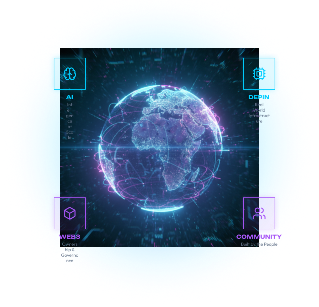
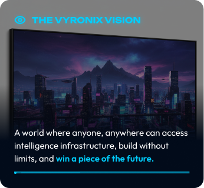

Official Document
VYRONIX
LABS
Whitepaper
Building the Foundational Infrastructure for the Decentralized Intelligence Economy
Building the Foundational Infrastructure for the Decentralized Intelligence Economy
Vyronix Labs is building the foundational infrastructure for the Decentralized Intelligence Economy. We combine the power of Artificial Intelligence, Web3 technology, and Decentralized Physical Infrastructure Networks (DePIN) to create a scalable, open, and incentivized ecosystem.
Our mission is to empower builders, businesses, and communities to co-create the next generation of intelligent applications while rewarding the contributors who power the network.


A complete decentralized ecosystem providing the core infrastructure layer for AI innovation.
The convergence of AI, Web3, and Decentralized Physical Infrastructure Networks (DePIN) is creating the largest technological shift of our time. Estimates indicate a massive rise in the demand for distributed infrastructure, AI processing, multi-chain DePIN capacities for early builders and contributors.
The infrastructure layer of the digital economy is being rewritten. Proprietary silos are being replaced by open networks that prioritize scalability and transparency.
Adoption of decentralized ledgers by major institutions for secure data management.
Exponential growth in cloud-based AI training and model inference requirements.
Streamlined interfaces making Web3 and AI tools accessible to the next billion users.
Evolving legal frameworks providing clarity for decentralized compute and ownership.
Increasing availability of edge hardware units contributing to the global DePIN mesh.
Today's AI infrastructure is centralized, expensive, and inaccessible to the majority. Breakthroughs in AI have high costs, vendor lock‑in and lack of transparency.
This creates barriers for developers, researchers, and growing companies, concentrating power in the hands of a few.
A few cloud providers control the majority of AI compute, creating a single point of failure and monopoly risk.
API costs are too high for startups, researchers, and independent developers, limiting innovation.
Geographic and economic barriers create long‑tail winners and unfair advantages across the digital map.
Centralized AI models preventing collaboration, interoperability, and user ownership of mission‑critical data.
Businesses are trapped in ecosystem dependencies, limiting flexibility and long‑term scaling growth.
Inefficient computation slowing AI deployment
Resources wasted on intermediaries
Global talent excluded from AI benefits
Centralized data creates vulnerabilities
Black‑box models limiting trust
THE WORLD NEEDS A NEW PARADIGM. VYRONIX LABS IS BUILDING IT.
Vyronix Labs: Powering the Decentralized Intelligence Economy.
Vyronix Labs merges AI, Web3, and DePIN into a single, open infrastructure layer. Vyronix provides access to compute, data, and AI models. We ensure ownership and value to the community while enabling limitless innovation.
Enables AI startups with decentralized access, AI models, and compute infrastructure for the next generation of intelligent applications.
Decentralized data, privacy tools and tokenization layer to ensure transparency, security and community ownership.
A global network of GPU, storage, compute, and edge nodes that becomes the foundation for a next-generation economy.
A thriving ecosystem where builders, creators, and investors participate and contribute to one unified growing ecosystem.
A Unified Infrastructure for the Decentralized Intelligence Economy
Vyronix Labs integrates AI, Web3, and DePIN into a multi-layered architecture that powers compute, storage, data and applications in a decentralized, secure, and scalable manner.
 IdentityDID & Reputation
IdentityDID & Reputation
"The future of intelligence is decentralized, open, and owned by everyone."
— Vyronix LabsThe Intelligence Layer of the Decentralized Economy
Vyronix AI is a decentralized artificial intelligence infrastructure providing open access to compute, AI models, and intelligent agents - enabling developers, enterprises, and communities to build, train, and deploy AI without centralized gatekeepers.
Open marketplace for AI models with on-chain verification and community curation for safety and efficiency.
Build autonomous AI agents that interact with smart contracts, external APIs, and real-world sensors.
Global GPU nodes provide low-latency AI inference at a fraction of the cost of centralized cloud giants.
Developers monetize specialized models while users access cutting-edge intelligence using $VYR tokens.
"Vyronix AI is not just a tool - it is the foundation for a world where intelligence is open, decentralized, and owned by everyone."
Vyronix AI powers the next generation of intelligent, decentralized applications - at 10X lower cost, 100% open, community-owned.
The Trust Layer of the Decentralized Intelligence Economy
Vyronix Web3 is the governance and ownership layer of the Vyronix ecosystem. It provides decentralized identity, smart contracts, DAO governance, and cross-chain interoperability - ensuring every participant has verifiable ownership and voice in the network.
Automated, audited smart contracts power every protocol interaction and value exchange.
$VYR holders propose and vote on technical upgrades, treasury allocation, and ecosystem grants.
Self-sovereign identity giving users total control over their data, compute history, and reputation.
Seamless asset movement across Ethereum, BNB Chain, Solana and other leading layer-one networks.
The Physical Infrastructure Layer of the Decentralized Economy
Vyronix DePIN is a Decentralized Physical Infrastructure Network powering real-world compute, storage, and connectivity across a global network of contributor nodes - bringing AI compute to the physical world.
"Vyronix DePIN is the backbone of the Decentralized Intelligence Economy - real hardware, real contributors, real value."
The Unified Product Suite of the Decentralized Intelligence Economy
The Vyronix Ecosystem is a comprehensive suite of decentralized products and protocols - enabling builders, users, and contributors to participate in the Decentralized Intelligence Economy.
"The Vyronix Ecosystem is where AI, Web3, and DePIN converge - creating limitless opportunities for builders, users, and contributors."
$VYR — The Native Token of the Vyronix Ecosystem
The $VYR token is the economic backbone of the Vyronix ecosystem — governing access, rewarding contributors, and enabling community ownership across AI, Web3, and DePIN.
Vote on protocol upgrades, treasury allocation, and strategic partnerships via the Vyronix DAO.
Stake $VYR to secure the network, earn yield, and boost performance multipliers for node operators.
Used as the primary unit of exchange for AI compute, storage, edge services, and premium API access.
Incentivizing network contributions including compute provision, data training, and ecosystem value-add.
Building the Decentralized Intelligence Economy — Phase by Phase
Vyronix Labs executes a multi-phase roadmap delivering milestones across AI, Web3, and DePIN. Each phase builds on the last — creating an unstoppable decentralized intelligence network.
"We are on track — every phase brings us closer to a world where intelligence is open, decentralized, and owned by everyone."
By the Community, For the Future
Vyronix Labs is governed by a Decentralized Autonomous Organization (DAO). Power is in the hands of the community, not in a central authority.
Power flows through the community — always.
The DAO treasury is community-controlled and used for sustainable growth.
"Governance is not just about voting. It is about building a future together." — Vyronix Labs
Your Voice. Your Power. Our Future.Built-In. By Design. Always On.
Security is the foundation of Vyronix Labs. Our multi-layered architecture protects users, assets, data, AI models, and digital assets — eliminating single points of failure at every level.
Nothing is trusted by default. Every transaction, request, and interaction is independently verified.
All contracts undergo multiple independent audits by top-tier security firms before any deployment.
All user data, AI model communications, and system transactions are encrypted in transit and at rest.
No single point of failure. Data, models, and assets are distributed across the global network.
Vyronix Labs is committed to continuous security improvement. Our promise: transparent, audited, and community-verified security at every layer.
The Builders Behind the Decentralized Intelligence Revolution
Vyronix Labs is powered by a world-class team of engineers, researchers, and entrepreneurs with deep expertise in AI, blockchain, and decentralized infrastructure.
Ex-Google DeepMind, 15+ yrs AI & blockchain
Distributed systems, ex-Ethereum core contributor
PhD AI/ML Stanford, NLP research lead
DeFi protocol designer, 8 yrs smart contracts
Network infra expert, ex-AWS distributed systems
Web3 venture background, ex-Binance partnerships
Full-stack blockchain, Solidity & Rust specialist
Built 100K+ crypto communities
Join us in building the future of decentralized intelligence.
"The best teams build in public, ship what matters, and grow with the community."
— VYRONIX LABSWorld-Class Advisors Guiding the Decentralized Future
Vyronix Labs is backed by a distinguished panel of advisors with proven track records across AI research, blockchain infrastructure, venture capital, and global enterprise.
Stanford University AI Lab
Pioneer in neural network architecture and applied ML systems
Ex-Consensys, Protocol Labs
12 years designing blockchain protocols and Web3 infrastructure
Partner at DeFi Capital
Led 50+ investments in Web3, DePIN, and AI infrastructure
Ex-Cisco, MIT Media Lab
Global expert in decentralized physical networks and edge computing
Former VP at IBM
Scaled enterprise blockchain adoption across 40+ Fortune 500 companies
Architecture decisions, protocol design, and security reviews
Strategic introductions to investors, partners, and enterprise clients
Go-to-market planning, competitive positioning, and ecosystem growth
Protocol proposals, tokenomics review, and DAO framework design
"Our advisors are not just names on a page — they are active builders and believers in the decentralized intelligence vision."
— VYRONIX LABSImportant Legal Information — Please Read Carefully
Last Updated: June 2025 | Version 1.0
This whitepaper has been prepared by Vyronix Labs for informational purposes only. The information contained herein does not constitute financial advice, investment advice, trading advice, or any other sort of advice. Vyronix Labs does not recommend that any cryptocurrency should be bought, sold, or held by you.
This document may contain forward-looking statements regarding the future development and performance of Vyronix Labs and its products. These statements are subject to risks and uncertainties that could cause actual results to differ materially.
$VYR tokens are utility tokens that provide access to the Vyronix network. They do not represent equity, ownership, or any financial instrument. This whitepaper does not constitute an offer to sell or a solicitation to buy securities in any jurisdiction.
Participation in the Vyronix ecosystem involves significant risks including but not limited to: regulatory uncertainty, market volatility, technological risks, smart contract vulnerabilities, and liquidity risks. Participants should carefully consider these risks before engaging.
All intellectual property rights in this document, the Vyronix name, logo, technology, and protocols are owned by Vyronix Labs. Reproduction or distribution without prior written consent is prohibited.
Vyronix Labs is committed to regulatory compliance across all jurisdictions. Users and participants are responsible for ensuring their own compliance with local laws and regulations. This document is not intended for distribution in jurisdictions where such distribution would be unlawful.
Legal Inquiries: legal@vyronixlabs.io
General Inquiries: hello@vyronixlabs.io
Website: vyronixlabs.io